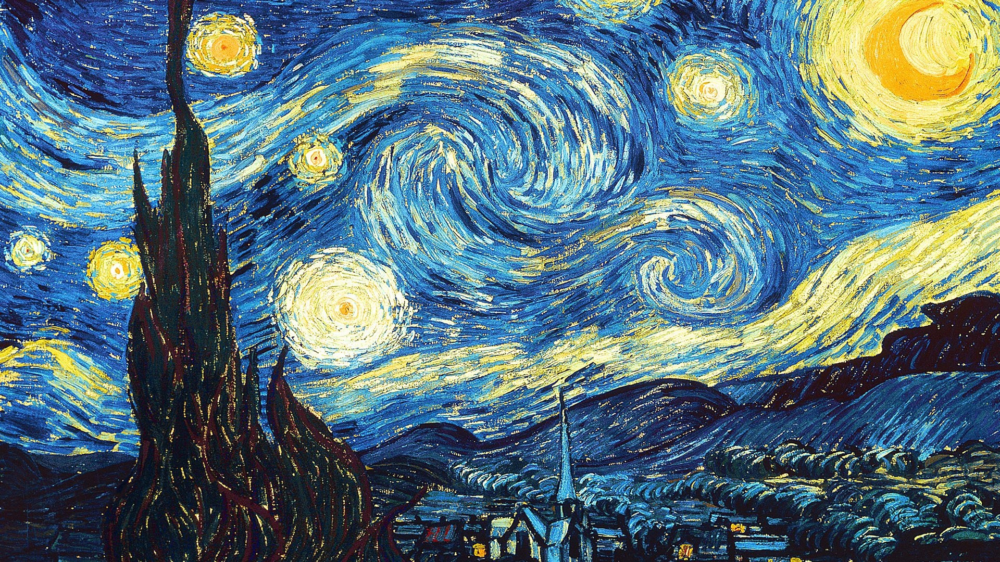

Noite Estrelada
por Vincent van Gogh (1889)

Clique com o botão direito para abrir em nova aba e dar zoom.
Descrição da Obra
"Noite Estrelada" é uma das obras mais icônicas de Vincent van Gogh. Pintada enquanto o artista estava internado no asilo de Saint-Rémy, na França, a pintura expressa uma paisagem noturna vibrante e emocional.
A composição apresenta redemoinhos intensos no céu, uma vila tranquila abaixo e um cipreste escuro em primeiro plano. Van Gogh utilizou pinceladas espessas e curvas para transmitir movimento e emoção.
Detalhes Técnicos
- Artista: Vincent van Gogh
- Ano: 1889
- Estilo: Pós-impressionismo
- Localização Atual: Museu de Arte Moderna (MoMA), Nova York
- Dimensões: 73,7 cm × 92,1 cm
Curiosidades
- A obra foi pintada durante uma crise de saúde mental de Van Gogh.
- Não representa uma vila real: a cidade no quadro é imaginada.
- É uma das pinturas mais reproduzidas e estudadas do mundo.